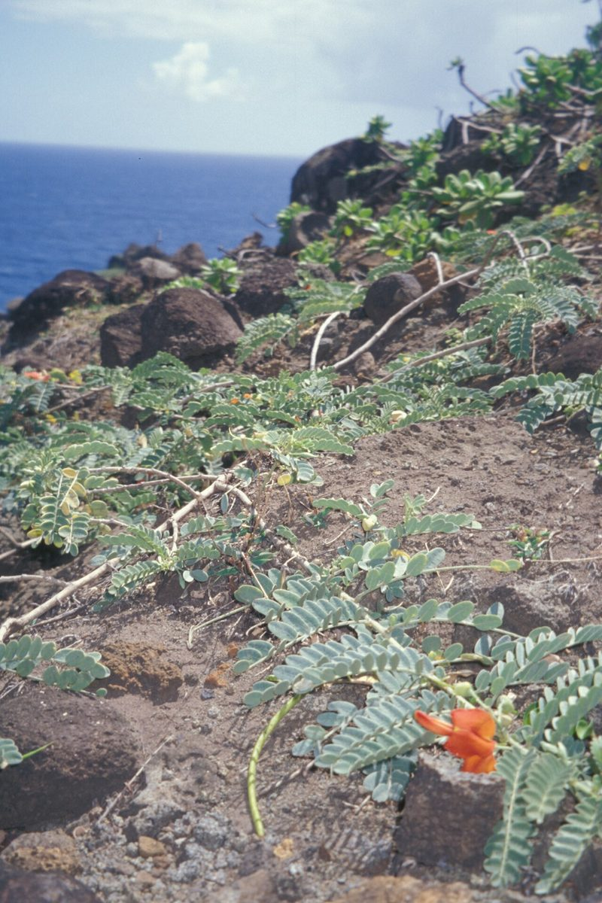
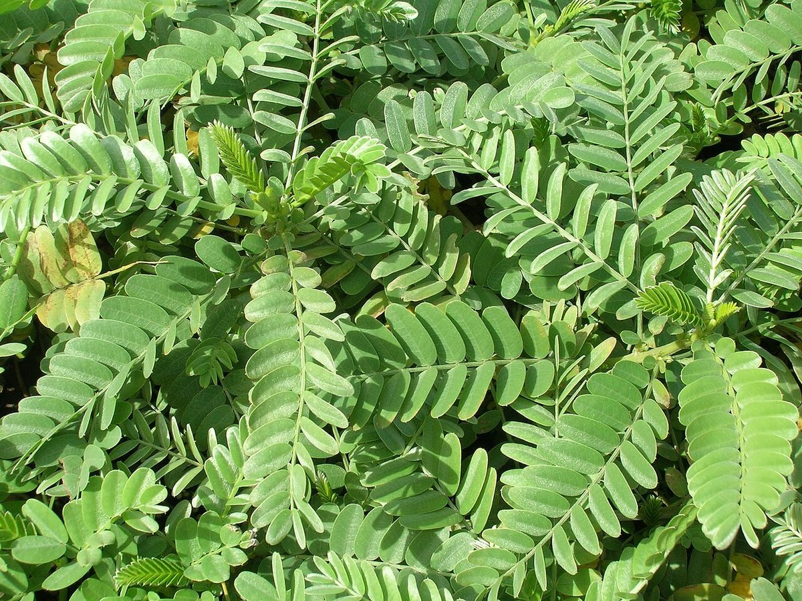

Sesbania tomentosa
ʻōhai · Hawaiʻi riverhemp



Quick facts
| Family | Fabaceae |
|---|---|
| Scientific name | Sesbania tomentosa |
| Hawaiian name(s) | ʻōhai |
| English name(s) | Hawaiʻi riverhemp |
| Status | Endemic |
| Conservation | US Endangered (USFWS 1994) |
| Coastal zones | Beach strand Dune |
| Occurrence | Historically widespread on Hawaiian coastal strand and dunes, including Kauaʻi. Present-day wild populations are severely reduced; Kauaʻi-specific extant coastal locations should be treated cautiously (see uncertainty note). Included here for its cultural significance and its historical role in Kauaʻi coastal vegetation; cross-listed in the RARE index via federal listing status. |
How to identify
- Growth form
- Sprawling or somewhat erect shrub, often prostrate near the shore and more upright farther back. Young stems and foliage densely silvery-hairy — the whole plant reads silvery from a distance.
- Size
- 0.5–3 m tall (or trailing to several metres long on dunes).
- Leaves
- Alternate, pinnately compound with many (12–36) small oblong leaflets 5–15 mm long, all densely covered in fine silvery hairs. Leaflets often fold at midday in heat.
- Flowers
- Classic pea-family flowers in racemes of 3–8 blossoms, ~2–3 cm long; colour varies among populations from salmon-orange to red, coral-pink, or yellow — a single population is typically one colour.
- Fruit / seed
- Long, slender legume pod 10–25 cm long, narrowly cylindrical, containing 8–20 small dark seeds.
- Bark / stem
- Young stems silvery-hairy; older woody stems grey-brown, often trailing along sand.
- Where it sits on the coast
- Open sand of dune systems, strand behind the wrack line, and disturbed coastal flats; historically on many Hawaiian shores including Kauaʻi.
Clinchers (features that lock the ID)
- Whole plant silvery-hairy — the most striking field mark.
- Pinnately compound leaves with many small silver leaflets.
- Pea-family racemes of red/orange/salmon/yellow flowers.
- Long slender legume pod (a Sesbania hallmark).
Look-alikes
- Sesbania grandiflora (introduced) — A much larger tree with large white or red flowers, not silvery-hairy, and cultivated rather than wild-coastal. Not native and not found on the unpopulated coast.
- Introduced Fabaceae shrubs (Crotalaria spp., Cassia spp.) — None of the common introduced coastal legumes are densely silvery-hairy across leaves and stems — the silvery pubescence is essentially diagnostic on Hawaiʻi shores.
Ecology
Endemic Hawaiian legume adapted to coastal sand and dune substrates, with nitrogen-fixing root nodules that enrich impoverished coastal soils. Populations are threatened by feral ungulates (goats, pigs, deer), rodent seed predation, competition from introduced grasses, and habitat conversion. USFWS listed the species as endangered in 1994; a recovery plan documents Kauaʻi as part of the historical range. [1], [2], [3], [5], [10], [37]
Cultural significance
ʻŌhai flowers are treasured in Hawaiian lei-making tradition, and the species appears in mele (chants) associated with several islands. Sacred associations vary by place and lineage — Hawaiian cultural practitioners are the appropriate keepers of that knowledge. This guide names the significance without asserting ceremonial detail.